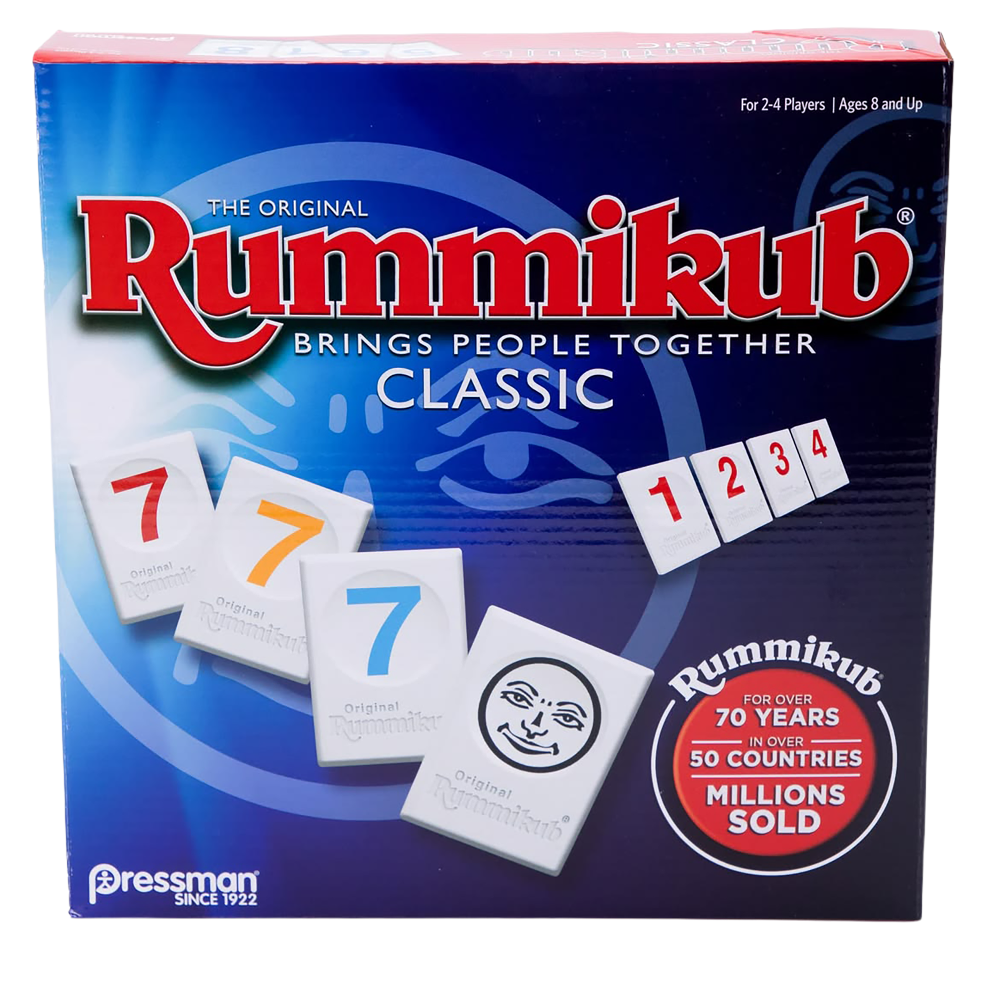

Genre: Tile / Strategy Game
👥: 2 - 4 people
Duration: 30 - 60 minutes
Recommended age: 7+
Each player starts with 14 tiles. The goal is to be the first person to get rid of all the tiles
on your rack. You can put tiles down in groups of the same number in different colors, or
in runs of consecutive numbers in the same color. Once you've started playing tiles, you
can also rearrange the combinations on the table to help you play more tiles. Just make sure
all the combinations are still valid when your turn ends. The first player to use all their tiles wins!